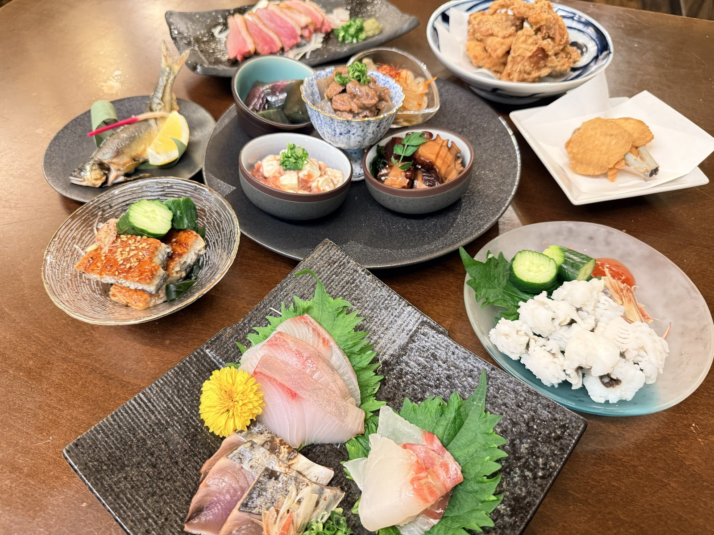
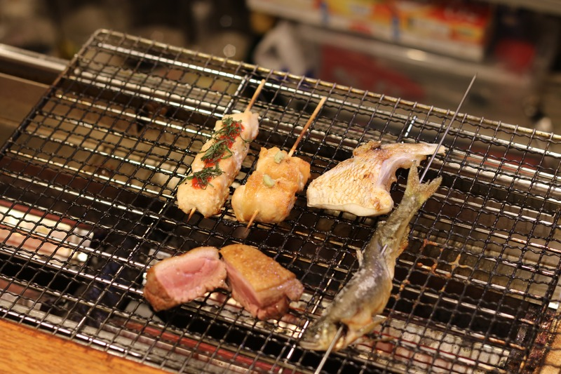
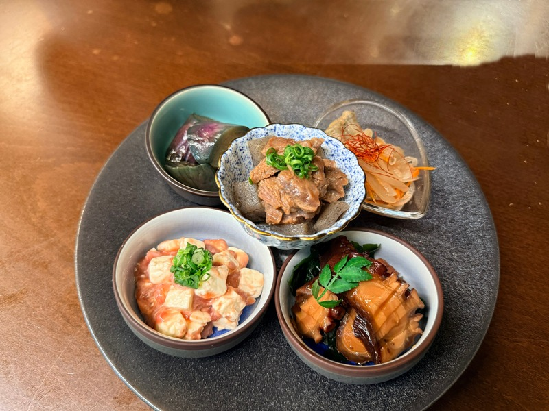
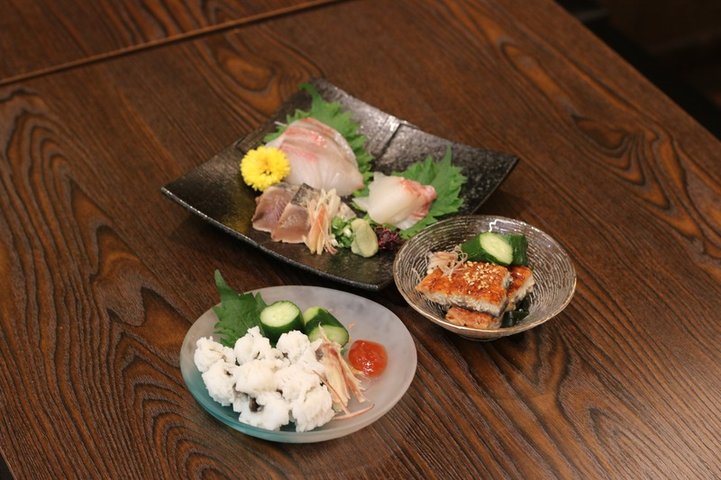
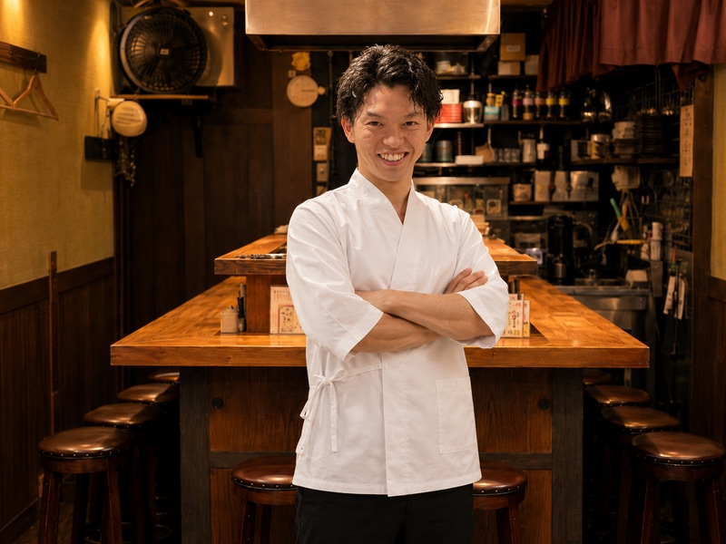
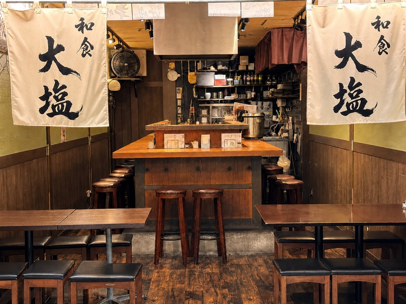

我們以絕妙火候，將當季蔬菜與海鮮烤得香氣四溢。現場的烹調聲與香氣，讓您用五感體驗季節的變化，這就是我們的「燒烤主菜」。

嚴選當季食材，精心製作五款一口大小的小缽。無論是搭配乾杯，或作為引領您進入正統和食世界的「前菜」，都能細細品味。

我們嚴選當季最新鮮的魚類，為您呈現三款刺身。坐在吧台，您可近距離感受現場氛圍，輕鬆享用高品質的生魚片。
查看全部菜單
網路預約 24 小時隨時受理

我們全新開幕「和食 大塩」。理念是「用正統和食，輕鬆品味當季美味」。
受料理人父親影響，我踏上料理之路，並於京都南禪寺修行五年，打下和食基礎。之後，為了讓客人在眼前更輕鬆享用料理，我加入了大塩。
這次，我將超越「天婦羅」的框架，將修行時期累積的和食技藝完整呈現。歡迎在輕鬆自在的空間，品嚐正統和食的美味。
